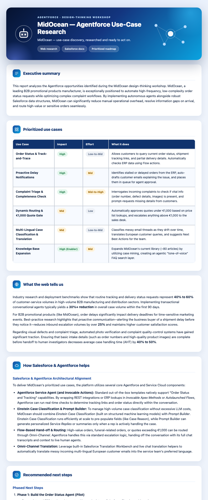

An Agentforce employee agent that turns a design-thinking workshop's output (a meeting transcript
+ a Lucid-board description) into a researched, beautifully-styled HTML report, saved as a Salesforce
Note. Built, deployed, published, and tested end-to-end on the hackathon_sandbox org.
The agent is designed for the workshop debrief: a participant pastes in two inputs (which my colleague's component will capture for real) and the agent does the rest.
The report is the takeaway artifact; it's stored as a ContentNote so the participant can open it from Salesforce, and the full styled HTML is also returned for display/download.
Use_Case_Research_Agent (AiAuthoringBundle, Agentforce Employee
Agent). A single research subagent with reasoning instructions that enforce the
understand → research-web → research-docs → build-report → respond sequence.standardInvocableAction://webSearchStream):
real-time external research for industry context, benchmarks, and best practices.standardInvocableAction://answerQuestionsWithSalesforceDocumentation): maps the
use cases to concrete Salesforce/Agentforce features.apex://WorkshopReportBuilder,
surfaced in the asset library as the Employee_Agent_Build_Report GenAiFunction):
the heavy lifting. The agent supplies clean content slots; the Apex owns all presentation.The agent shouldn't hand-author CSS (it's inconsistent and burns tokens). Instead it passes
content slots — executive summary, prioritized use cases, web research, Salesforce guidance,
recommendations, sources — and WorkshopReportBuilder assembles a branded, full-CSS
report (gradient hero with an Agentforce mark + constellation art, icon-badged section cards, an
impact/effort table with colored pills). It then:
HtmlNoteService; andfullHtml) for display/download, plus the
created note record so the agent can give the user a clickable link.| Test | Result |
|---|---|
Agent Script validation (sf agent validate authoring-bundle) | 0 errors |
| Publish & activate on sandbox | v1 Active |
Apex: WorkshopReportBuilderTest | 3/3 pass |
Apex: HtmlNoteServiceTest (note creation) | 9/9 pass |
| End-to-end run with MidOcean test data (preview API) | Report generated + saved |
| Output quality — specific, structured, sourced | Verified |
Started a live preview session (sf agent preview start --use-live-actions) and sent
the MidOcean test data (a Granola-style transcript + the Lucid board description). The agent ran its
research actions and the report builder, then replied with a confirmation, a clickable link to the
saved note, and headline recommendations. Its actual generated content was captured and rendered
(below).
"I have successfully researched your workshop findings and generated a beautifully formatted, polished HTML report. It is now saved as a Salesforce Note… Headline recommendations: Pilot the Order Status Agent first; implement guardrails & a €1,000 quote gate; combine Einstein Case Classification with Prompt Builder to optimize LLM cost."
This is the actual styled HTML the agent produced for the MidOcean workshop, rendered.
The full standalone file is at docs/test-data/agent-report-styled.html.

Note the content is specific to MidOcean — a 6-row prioritized use-case table (order status, proactive delay notifications, complaint triage, €1,000 quote gate, multilingual classification, KA expansion) with colored impact/effort pills, web benchmarks (40–60% of volume is status requests; ~30% deflection), concrete Salesforce mappings (Einstein Case Classification + Prompt Builder for cost, Omni-Channel for sensitive-order routing), and a phased plan.
force-app/main/default/aiAuthoringBundles/Use_Case_Research_Agent/ — the agent.force-app/main/default/classes/WorkshopReportBuilder.cls — the report builder action.force-app/main/default/genAiFunctions/Employee_Agent_Build_Report/ — asset-library entry.docs/test-data/midocean-granola-transcript.md · midocean-lucid-board-description.md — test inputs.docs/test-data/agent-report-styled.html — the agent's generated report (open in a browser).